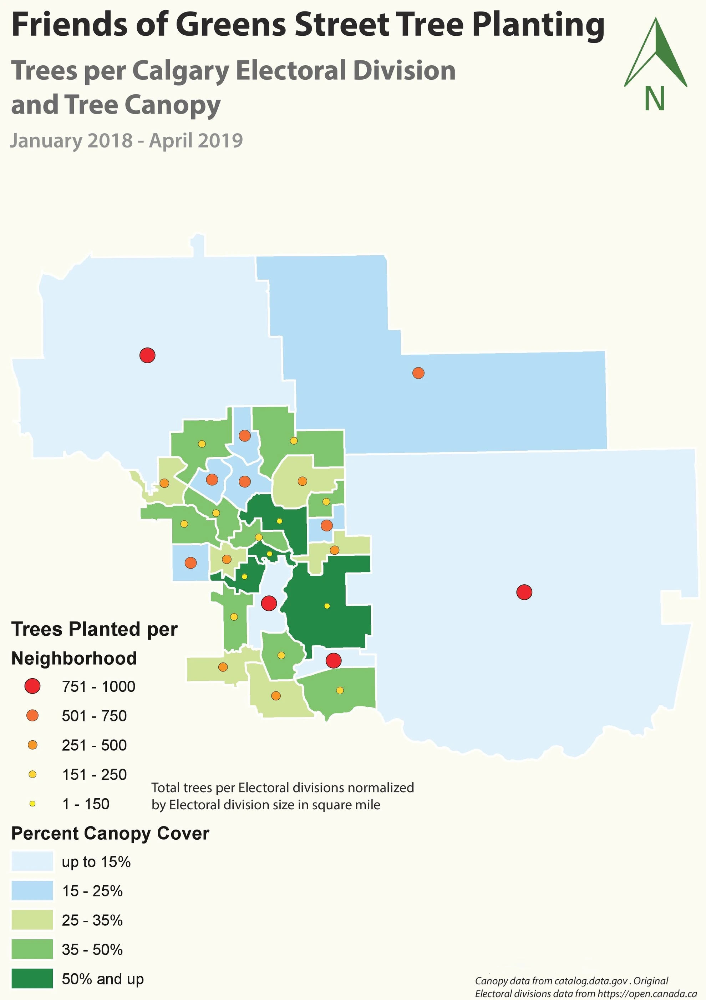

Cartography
Calgary tree canopy and planting
I brought tree canopy and planting activity into one Calgary map to examine them together. The question was whether places with limited existing cover also showed planting activity, and where the contrast might deserve a closer look. The layout covers January 2018 to April 2019.
- Location
- Calgary, Alberta
- Period shown
- January 2018 to April 2019
- Map type
- Choropleth and graduated symbols
Canopy and planting layout


Look at the larger planting symbols in several low canopy outer areas, then compare them with the greener central and southern areas. The original planting geography and normalization labels need reconciliation before exact totals are reused.
Inspect details: Canopy and planting layoutComparing existing cover with planting
I used blue and green area colours for canopy cover and warm coloured circles for the planting classes. Keeping the two variables visually separate lets a reader compare the amount of cover with the recorded activity without switching between maps.
The contrast is clearest in the large outer areas: some have low canopy cover but prominent planting symbols. A planting team could use this kind of view to identify areas for a site review, then check planting opportunities and the condition of existing trees on the ground.
What the comparison can support
Planting activity and existing canopy describe different things, so the map cannot establish that recent planting caused the cover shown. It provides an overview of where to look more closely.
The original legend also mixes neighbourhood and electoral division labels and includes an area normalization note. I would reconcile those labels with the source table before using the circles as exact planting totals.
Data and references
- Canopy data credited to catalog.data.gov in the original layout
- Electoral division data credited to Open Canada in the original layout